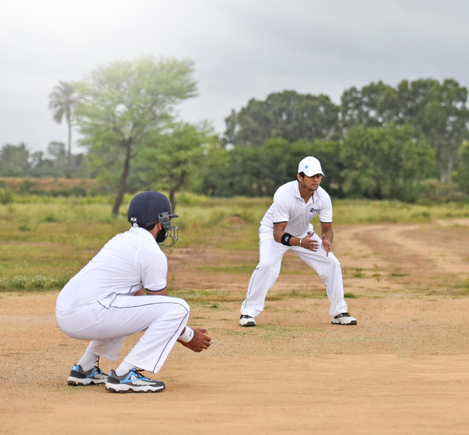
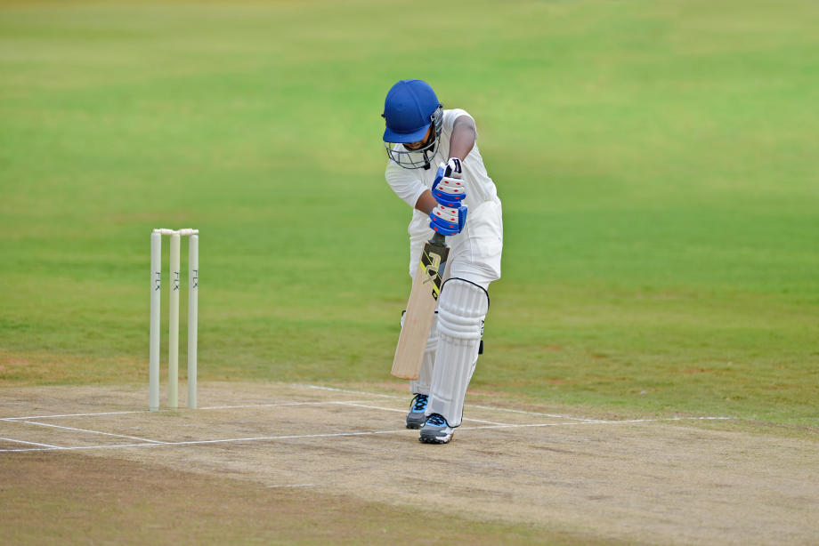

CRICKET
People often say that the biggest religion in India is cricket. Watching cricket matches in India is usually a family affair. You will often find conversations at workplaces or social gatherings about the latest cricket match. In order to help you be a part of such conversations we bring to you the basic rules and regulations of cricket and how cricket scoring works.
7 Basic Rules of Cricket Game
- Cricket rules are not that complicated to understand. Cricket involves five basic equipment - the ball, the bat, the wickets, stumps, and the bails. These are the ABCs of cricket and will help you understand the rest of the rules.
- Cricket is a team game played between two teams of 11 players each. The 11 players constitute batsmen, bowlers and a wicket keeper.
- The match is usually played on a large circular or oval shaped ground. There is also a smaller inner oval with a 22 yard pitch at the centre. At each end of the pitch is a set of three wickets with two wooden bails atop them.
- The match is broken down into separate sections called balls, which is one delivery of the ball bowled by a bowler to a batsman. Six of these balls form an over.
- An innings is made of a specific number of overs or a certain amount of time. A one day international match consists of 50 overs per innings, a twenty twenty international match consists of 20 overs per innings whereas a test match is limited to a certain number of days which is 5 with 90 overs to be played on each day.
- During the innings, the batting team will have two batsmen on the pitch while the 11 players of the opposing team, who are the bowling team, will have their players at various parts of the field as fielders. One of them will be bowling the ball and another one will be a wicket-keeper and will be stationed behind the wicket.
- The match will also have two on-field umpires that make the decisions of the game. There is also a third umpire that monitors the game through a screen and helps with uncertain or close decisions.
Basic Cricket Rules And Regulation
1. Fielding Restrictions

- Fielding has its own set of rules for all cricket forms. To attain a fair game for both the teams and avoid any malicious approach or strategy.
- Bowling team has players as bowler, wicket-keeper and 9 fielders spread across the field and their positions may vary with passing overs. The fielding positions are such that only two fielders are set in the quadrant between square leg and long stop fielding positions, where no fielder should be on the pitch until the batsman play the ball.
There are separate cricket restrictions and rules for men’s and women’s cricket. In 2015, the recent powerplay rules removed batting powerplay and allow 5 fielders outside circle in last 10 overs. Powerplay rules are as follows:
- During the first 10 overs of an innings a maximum of 2 fielders are allowed outside the 30-yard circle.
- Between overs 11 and 40 a maximum of 4 fielders are allowed outside the 30-yard circle.
- In the final 10 overs (41–50) a maximum of 5 fielders will be allowed to field outside the 30-yard circle.
2. Penalty Balls

There are specifically three types of penalty balls in cricket:
-
No Ball: No ball credit one run to the batting team, which happens when bowler crosses the crease with front-foot while bowling or if bowler’s back foot lands outside crease (return-crease). These runs are tallied separately from batsman score and credited to the team's score. No ball also counts if ball doesn't hit the pitch and is high above the waist of stricker. Noball is followed by “a free-hit” to batsman where another ball is served, during free-hit the batsman can only be declared out via a runout or stumping. By latest rules No-balls are scored against the bowler to achieve accuracy in bowling statistics.
- Dead Ball: It happens when the ball bounce twice or more before reaching batsman’s crease. This doesn’t provide any free hit or extra run to the batting team but an extra ball will be served.
-
Wide ball: Wide ball too awards batting team with a run. These runs by wide ball tallied separately from individual batsman score and credited to the team's score. A wide ball falls when it is served far from batsman or above the head, provided no part of batsman body or bat (and other equipment) touches the ball. It also avail an opportunity for batsman to play an extra ball which is served in replacement to the wide ball. By latest rules Wide-balls are scored against the bowler to achieve accuracy in bowling statistics.
3. Bye and leg bye in cricket

- Bye in cricket is either scored from no-ball or any legitimate delivery. When a ball doesn’t struck by the bat and not touches any body part of batsman, batsman may choose to run and score. If such ball is served and hit the boundary, it credits a four to the team. These byes are also marked separately from batsman individual score.
-
Leg bye in cricket is when a ball served and hits any body part of the batsman showing his intend to play the ball, he can run and score. If such a ball reaches boundary, a four is scored in batting team. Such runs when scored are known as leg byes.